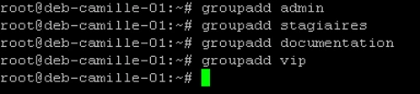
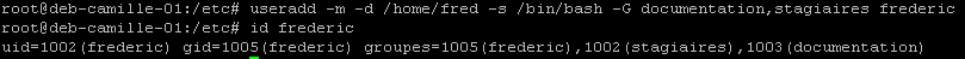
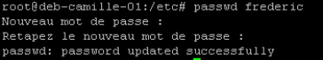
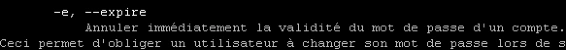
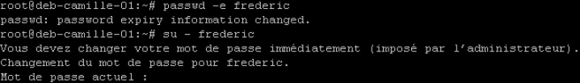
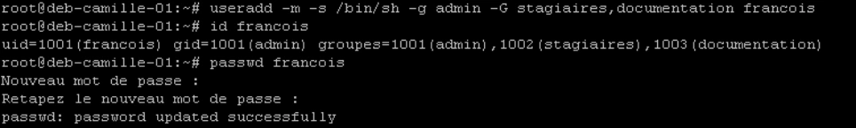
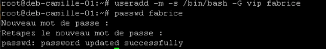
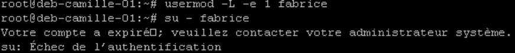

Module 10 — Gestion des utilisateurs et groupes¶
La transcription du support Drive et l’aide pédagogique sont séparées pour rendre leur provenance explicite.
SOURCE DRIVE · TRANSCRIPTION DU SUPPORT
Le contenu des documents du dossier TSSR est transcrit ci-dessous, page par page. Les textes et tableaux sont intégrés à la page Web. Aucun fichier PDF, aucune diapositive entière ni aucune reproduction de page n’est affiché. Seuls des croquis ou visuels isolés et vérifiés peuvent accompagner la transcription. Les versions et les consignes restent celles des supports de formation. Les compléments IA sont conservés dans leur onglet distinct.
Support · RES24_0050B - M10 - Linux Administration (Debian) · 42 pages transcrites
Administration Debian
GNU/Linux
Module 10 – Gestion des utilisateurs et groupes
Gestion des utilisateurs et groupes
Objectifs
- Créer et gérer des groupes et utilisateurs
- Consulter les fichiers de configuration
- Effectuer une élévation de privilèges en environnement GNU/Linux
Gestion des utilisateurs et groupes
Considérations
générales
Les identifiants
- Sous Linux, les utilisateurs sont représentés par deux valeurs importantes :
- L’UID : l’identifiant utilisateur
- Le GID : l’identifiant du groupe principal
- Il est possible qu’un utilisateur appartienne à plusieurs groupes. Il y aura donc les notions de groupe principal et de groupe secondaire
- Le groupe principal est le groupe attribué à l’utilisateur au moment de sa connexion
Les types d’utilisateurs
- Il existe trois types d’utilisateurs :
- root : UID=0, GID=0 C’est le super-administrateur du système. Il a tout pouvoir. Il est donc conseillé d’être le moins possible sous cette identité, voire fortement conseillé de ne pas se connecter avec mais de faire une élévation de privilèges via la commande su -. Sur certains systèmes, il sera impossible de se connecter en root dans l’interface graphique.
- daemon : UID 1-999, GID 1-999 Les utilisateurs compris entre 1 et 999 pour leur UID/GID représentent les utilisateurs applicatifs (les services). En effet sous Linux 99% des services ne sont pas exécutés sous l’identité de root mais sous leur propre identité à des fins de sécurité.
- Utilisateur : UID et GID > 1000 Les utilisateurs « humains » sont représentés par des UID/GID supérieurs à 1000.
Gestion des utilisateurs et groupes
Les fichiers liés à la gestion des groupes
Généralités
- Les informations concernant les groupes d’un système Linux sont contenus dans les fichiers /etc/group et /etc/gshadow
- Nous pourrons y prendre des informations, mais nous ne les modifierons jamais directement
- La manipulation des groupes devra se faire par les commandes dédiées
Le fichier /etc/group
- Ce fichier est composé de plusieurs champs, séparés par le caractère :
root@deb:~# cat /etc/group
root:x:0:
daemon:x:1:
[...]
user:x:1000:
jmartin:x:1001:
sdia:x:1002:
abenabel:x:1101:
informatique:x:1500:jmartin,abenabel,sdiaLe fichier /etc/group
- Analyse de colonnes
nomgroupe:passechiffré:GID:membres,de,ce,groupe,secondaire- En général, il y a un x dans la colonne du mot de passe, cela indique que le mot de passe est dans le fichier /etc/gshadow
user:x:1000:
jmartin:x:1001:
sdia:x:1002:
abenabel:x:1101:
informatique:x:1500:jmartin,abenabel,sdiaLe fichier /etc/gshadow
- Ce fichier contient les informations cachées sur les groupes séparés par le caractère : . Il est rarement utilisé
root@deb:~# cat /etc/gshadow
root:$6$c.n9lt$tmf169GMlTRp/:18684:0:99999:7:::
daemon:*:18001:0:99999:7:::
bin:*:18001:0:99999:7:::
sys:*:18001:0:99999:7:::
[...]
jmartin:$6$X1URi$CDj5CU5Gl2Ex.:18153:0:99999:7:::
sdia:$6$X0RisM$JngFdwTEmaOfH.:18592:0:99999:7:::
abenabel:$6$gjD5IZ$EtlYhsMJngFw:18457:0:99999:7:::Le fichier /etc/gshadow
- Analyse de colonnes
nomgroupe:passechiffré:administrateurs:membres,du,groupe- Si le champ du mot de passe contient les caractères « ! » ou « * », les utilisateurs ne pourront pas utiliser le mot de passe pour accéder au groupe.
- Si le champ est vide, dans ce cas seul les membres du groupe pourront obtenir les permissions du groupe.
- Le champ administrateur contient la liste des administrateurs du groupe séparé par des virgules. Les administrateurs peuvent modifier le mot de passe et les membres du groupe.
Gestion des utilisateurs et groupes
Commandes de gestion
des groupes
groupadd
• groupadd <options> [nom du groupe]- Option usuelle : -g [GID] : valeur numérique de l’identifiant du groupe. Cette valeur doit être unique. Par défaut, le plus petit identifiant supérieur au GID_MIN et aux identifiants des groupes existants est utilisé.
groupmod
• groupmod <options> [nom du groupe]- Options usuelles :
- -g [GID] : change le GID d’un groupe. Attention aux orphelins des fichiers créés préalablement
- -n [nouveau nom] : change le nom du groupe
groupdel
• groupdel <options> [nom du groupe]- Cette commande permet de supprimer un groupe s’il est vidé de tous ses membres avant
gpasswd
• gpasswd <options> [nom du groupe]- Cette commande permet d’administrer les groupes
- Options usuelles :
- -a [utilisateur] : ajoute « utilisateur » au groupe.
- -d [utilisateur] : supprime « utilisateur » au groupe.
Commandes de gestion des groupes
Démo
Gérer les groupes
Gestion des utilisateurs et groupes
Les fichiers liés à la gestion des utilisateurs
Informations concernant les utilisateurs
- Les informations concernant les utilisateurs d’un système Linux sont contenus dans les fichiers /etc/passwd et /etc/shadow
- Nous pourrons y prendre des informations, mais nous ne les modifierons jamais directement
- La manipulation des utilisateurs devra se faire par les commandes dédiées
Le fichier /etc/passwd
- Ce fichier est composé de plusieurs champs, séparés par le caractère :
root@deb:~# cat /etc/passwd
root:x:0:0:root:/root:/bin/bash
daemon:x:1:1:daemon:/usr/sbin:/usr/sbin/nologin
[...]
jmartin:x:1001:1001:Jean Martin -
Logistique:/home/jmartin:/bin/bash
sdia:x:1002:1002::/home/sdia:/bin/sh
abenabel:x:1002:1002:Ashanti Ben
Abel:/home/abenabel:/bin/bashLe fichier /etc/passwd
nom:motdepassechiffré:UID:GID:nom complet:/repertoire/personnel:/shell- En général, il y a un x dans la colonne du mot de passe, cela indique que le mot de passe est dans le fichier /etc/shadow.
- Le champ UID indique le numéro qui est l’identifiant unique de l’utilisateur.
- Le champ GID détermine quel est le groupe principal de l’utilisateur.
- Le champ nom,complet comporte des informations complémentaires comme le nom complet, le téléphone, etc. Ces informations peuvent être directement indiquées lors de la création de l’utilisateur ou via la commande chfn.
- Le champ répertoire personnel contient le chemin du répertoire d’accueil de l’utilisateur, si celui-ci a été créé.
- Le champ shell correspond au chemin du binaire correspondant au shell de l’utilisateur. Il est possible de le modifier avec la commande chsh.
Le fichier /etc/shadow
- Ce fichier contient les informations cachées des utilisateurs séparées par le caractère :
root@deb:~# cat /etc/shadow
root:$6$c.n9lt$tmf169GMlTRp/:18684:0:99999:7:::
daemon:*:18001:0:99999:7:::
bin:*:18001:0:99999:7:::
sys:*:18001:0:99999:7:::
[...]
jmartin:$6$X1URi$CDj5CU5Gl2Ex.:18153:0:99999:7:::
sdia:$6$X0RisM$JngFdwTEmaOfH.:18592:0:99999:7:::
abenabel:$6$gjD5IZ$EtlYhsMJngFw:18457:0:99999:7:::Le fichier /etc/shadow
user:motdepasse:datedernierchangement:agemini:agemax:périodeavertissement:pério
deinectivité:datefinvalidité:champréservé- User : champ contenant le nom de l’utilisateur
- Mot de passe : champ contenant le hash du mot de passe. Cette colonne est composée de 3 champs séparés par des « $ »
- Premier champ : algorithme de hashage
- $1$ signifie MD5
- $2a$ signifie Blowfish
- $2$ signifie Blowfish (manipulation correcte de caractères 8 bits)
- $5$ signifie SHA-256
- $6$ signifie SHA-512
- Deuxième champ : le sel (ou grain de sable). C’est une chaîne de caractère aléatoire qui sera ajoutée au mot de passe avant de faire son hash
Le fichier /etc/shadow
user:motdepasse:datedernierchangement:agemini:agemax:périodeavertissement:périod
einectivité:datefinvalidité:champréservé- Troisième champ : le hash du mot de passe plus son sel. Le hash est une chaîne de caractère unique généré par l’algorithme de hash. Plus l’algorithme est fort plus le hash est complexe à décrypter.
- Le fait d’utiliser un sel dans le stockage des mots de passe permet d’augmenter la sécurité des mots de passe. Le principe du hash est de générer une chaîne de caractère unique d’une certaine taille par rapport à une chaîne de caractère donnée. Donc si deux utilisateurs ont le même mot de passe, par exemple « Pa$$w0rd », alors les hashs purs seront identiques. L’ajout du sel fait en sorte que les hashs soient différents, pourtant les utilisateurs ont le même mot de passe.
Le fichier /etc/shadow
user:motdepasse:datedernierchangement:agemini:agemax:périodeavertis
sement:périodeinectivité:datefinvalidité:champréservé- Date de dernier changement de mot de passe : nombre de jours depuis le 1er janvier 1970 déterminant le dernier changement du mot de passe. Une valeur à 0 force le changement du mot de passe pour l’utilisateur à la prochaine connexion. Si ce champ est vide, l’utilisateur ne subit pas les options de vieillissement du mot de passe.
- Âge minimum : l’âge minimum est la durée en jour que l’utilisateur devra attendre avant de pouvoir changer son mot de passe de nouveau. Un champ vide ou à 0 signifie qu’il n’y a pas d’âge minimum.
Gestion des groupes et utilisateurs
Commandes de gestion
des utilisateurs
useradd
useradd <options> [utilisateur]- Options usuelles :
- -m : useradd crée le répertoire d’accueil de l’utilisateur.
- -d [/chemin/rep/accueil] : répertoire d’accueil de l’utilisateur. Si non indiqué, useradd utilisera le nom de l’utilisateur et la valeur de la variable HOME du fichier /etc/default/useradd.
- -u [UID] : indique l’UID de l’utilisateur. Si non renseigné, useradd utilisera le plus petit UID disponible.
useradd
- -g [GID] : indique le GID du groupe principal de l’utilisateur.
- -G [groupe1,groupe2,groupen] : indique la liste des groupes secondaires de l’utilisateur séparés par des « , ».
- -s : indique le shell de l’utilisateur sous la forme du chemin absolu du binaire.
- -r : indique la création d’un utilisateur système. Lors de la création d’un utilisateur, si l’option –m est passée à useradd, alors useradd copiera le contenu du répertoire /etc/skel dans le répertoire d’accueil de l’utilisateur.
usermod
• usermod <options> [utilisateur]- Options usuelles :
- -d [/home/DIR] : indique le nouveau répertoire d’accueil de l’utilisateur. Si l’option –m est fournie, le contenu du répertoire actuel sera déplacé dans le nouveau répertoire d’accueil
- -e [DATE FIN VALIDITE] : date à laquelle le compte utilisateur sera désactivé. La date est indiquée dans le format AAAA-MM- JJ ou en nombre de jours depuis le 1er janvier 1970. Un paramètre DATE_FIN_VALIDITÉ vide désactivera l'expiration du compte.
usermod
- -f [DUREE INACTIVITE] : nombre de jours suivant la fin de validité d’un mot de passe après lequel le compte est définitivement désactivé. Une valeur de 0 désactive le compte dès que le mot de passe a dépassé sa fin de validité, et une valeur de -1 désactive cette fonctionnalité.
- -g [GID] : nom du nouveau groupe principal de l’utilisateur. Tout fichier du répertoire personnel de l'utilisateur appartenant au groupe principal précédent de l'utilisateur appartiendra à ce nouveau groupe. Le groupe propriétaire des fichiers en dehors du répertoire personnel de l'utilisateur doit être modifié manuellement.
usermod
• usermod <options> [utilisateur]- Options usuelles :
- -G [groupe1,groupe2,groupen] : liste des groupes secondaires de l’utilisateur. Si l’utilisateur appartient déjà à des groupes secondaires, il est peut-être utile d’ajouter l’option -a afin de ne pas perdre ces appartenances. Le groupe propriétaire des fichiers en dehors du répertoire personnel de l'utilisateur doit être modifié manuellement.
- -a : ajouter les groupes supplémentaires à l’utilisateur. À n’utiliser qu’avec l’option -G.
usermod
• usermod <options> [utilisateur]- Options usuelles :
- -s [shell] : chemin du nouveau shell de l’utilisateur (peut être configuré à l’aide de la commande chsh).
- -L : verrouille le mot de passe de l’utilisateur. Cette option ajoute un « ! » devant le hash du mot de passe dans /etc/shadow. Remarque : pour verrouiller le compte (et pas seulement l'accès par un mot de passe), il est également nécessaire de placer DATE_FIN_VALIDITÉ à 1.
- -U : déverrouille le mot de passe de l’utilisateur.
userdel
• userdel <options> [nom du groupe]- Cette commande permet de supprimer un utilisateur.
- Option usuelle :
- -r : les fichiers présents dans le répertoire d’accueil de l’utilisateur seront également supprimés. Les fichiers de l’utilisateur présents dans d’autres répertoires ne seront pas supprimés.
passwd
• passwd <options> [utilisateur]- En plus de pouvoir changer le mot de passe, si root l’exécute, passwd modifiera suivant les options passées les champs du fichier /etc/shadow.
- Options usuelles :
- -e [utilisateur] : annuler immédiatement la validité du mot de passe d’un utilisateur. Celui-ci sera obligé de changer son mot de passe à sa prochaine connexion.
- -l [utilisateur] : verrouille le mot de passe en ajoutant un « ! » devant le hash du mot de passe dans /etc/shadow.
- -u [utilisateur] : déverrouille le mot de passe en supprimant le « ! » devant le hash du mot de passe dans /etc/shadow.
Commandes de gestion des utilisateurs
Démo
Gérer les utilisateurs
Gestion des utilisateurs et groupes
Changement d’identité et élévation de privilèges
La commande su
- su <options> [utilisateur]
- su permet de changer d’utilisateur ou d’exécuter une commande sous l’identité d’un autre utilisateur.
- Si la commande est invoquée par un simple utilisateur, il faudra qu’il connaisse le mot de passe de l’autre utilisateur.
- su peut aussi permettre de devenir root.
- -s [shell] : préciser le shell à utiliser pour l’ouverture de session.
- - ou -l [utilisateur] : faire un changement complet d’identité (charge les variables d’environnement de l’utilisateur cible).
- -c [cmd] : exécuter la commande, il est conseillé de mettre la commande entre simples quote.
La commande sudo
• sudo <options> [commande]- La commande sudo permet de déléguer des tâches précises d'administration à certains utilisateurs. Par exemple, il sera possible d'accorder les privilèges de gestion des utilisateurs à un groupe d'utilisateurs.
- Nous ne rentrerons pas dans les détails dans ce cours.
- Afin qu’un utilisateur puisse utiliser la commande sudo, il faut qu’il soit renseigné dans le fichier de configuration /etc/sudoers et renseigner les commandes qu’il pourra utiliser.
jdoe@deb:~$ sudo apt update
[sudo] Mot de passe de jdoe
Réception de http://deb.debian.org/debian
stretch-updates InRelease [91,0 kB]La commande sudo
- De façon simple, il est possible de donner tous les droits root à un utilisateur en ajoutant le groupe sudo à l’utilisateur.
- L’utilisation de la commande sudo demande le mot de passe de l’utilisateur et non celui de root. L’élévation de privilège sera gardée en mémoire pour cinq minutes par défaut.
jdoe@deb:~$ sudo -i
[sudo] Mot de passe de jdoe
root@deb:~#Changement d’identité et élévation de privilèges
Démo
Élévation de privilèges
Gestion des utilisateurs et groupes
TP
Démo
Gérer les groupes et utilisateurs
Conclusion
- Vous savez créer et gérer des groupes et utilisateurs
- Vous savez consulter les fichiers de configuration
- Vous savez effectuer une élévation de privilèges en environnement GNU/Linux
Référence du document : 13t-YQt1AhuI0Dx4-SAB7wpbiAJLdmZEQ · SHA-256 4eb7394ca58f1c64…
Énoncé · M10TP01 - Enoncé - Gérer les groupes et utilisateurs · 2 pages transcrites
Gérer les groupes et utilisateurs
TP du Module 10 – titre Gestion des utilisateurs et des groupes
Avant de démarrer ce TP, il convient d’avoir suivi les vidéos des modules 1 à 10 et d’avoir réalisé les TP proposés.
Durée estimée
20 à 30 minutes
Énoncé
I. Création d’utilisateurs et de groupes sur le serveur sans environnement graphique
Créer des comptes utilisateurs pour : François, Frédéric et Fabrice avec les caractéristiques précisées.
Attention il faudra au préalable créer les groupes nécessaires à la configuration des utilisateurs.
- Pour François :
- Shell à utiliser Le shell sh
- Répertoire personnel /home/francois
- Mot de passe password
- Groupe principal admin
- Groupes secondaires stagiaires, documentation
- Pour Frédéric :
- Shell à utiliser Le shell bash
- Répertoire personnel /home/frederic
- Mot de passe AchAngEr
Ce mot de passe sera à changer à la première ouverture de session
- Groupes secondaires stagiaires, documentation
- Pour Fabrice :
- Shell à utiliser Le shell bash
- Répertoire personnel /home/fabrice
- Mot de passe password
Son compte devra être désactivé
- Groupes secondaires vip
Indice pour le mot de passe de Frédéric : voir le man de la commande passwd
IL EST INTERDIT DE MODIFIER DIRECTEMENT LES FICHIERS : /etc/passwd/, /etc/group, /etc/shadow, /etc/gshadow
Solution
Une solution est proposée pour ce TP sous la forme d'un PDF commenté, disponible dans les ressources à télécharger.
Référence du document : 1Frt4pfyPCPCxrzfGXW2yVNR51w0n032c · SHA-256 bcf2a418fb1af134…
Correction · M10TP01 - Solution - Gérer les groupes et utilisateurss · 3 pages transcrites
Correction originale : à consulter après avoir tenté l’exercice.
Gérer les groupes et utilisateurs
TP du Module 10 – titre Gestion des utilisateurs et des groupes
Avant de démarrer ce TP, il convient d’avoir suivi les vidéos des modules 1 à 10 et d’avoir réalisé les TP proposés.
Durée estimée
20 à 30 minutes
Énoncé
I. Création d’utilisateurs et de groupes sur le serveur sans environnement graphique
Créer des comptes utilisateurs pour : François, Frédéric et Fabrice avec les caractéristiques précisées.
Attention il faudra au préalable créer les groupes nécessaires à la configuration des utilisateurs.
Création des groupes utilisés pour ces trois comptes utilisateurs
- Pour François :
- Shell à utiliser Le shell sh
- Répertoire personnel /home/francois
- Mot de passe password
- Groupe principal admin
- Groupes secondaires stagiaires, documentation


Transcription des commandes et informations utiles visibles
groupadd admin
groupadd stagiaires
groupadd documentation
groupadd vipLes options de useradd : -m pour forcer la création du répertoire personnel de l'utilisateur -s pour préciser le binaire du shell à utiliser, -g pour le groupe principal, -G pour les groupes secondaires Id permet de vérifier les groups de l’utilisateur. Ne pas oublier de modifier le mot de passe avec passwd
- Pour Frédéric :
- Shell à utiliser Le shell bash
- Répertoire personnel /home/frederic
- Mot de passe AchAngEr
Ce mot de passe sera à changer à la première ouverture de session
- Groupes secondaires stagiaires, documentation
On ajoute l’option -d pour préciser le dossier /home/fred
La saisie du mot de passe ne change pas
Le man passwd contient cette information concernant l’expiration du mot de passe d’un utilisateur
Après la saisie de la commande pour forcer l’expiration du mot de passe, l’on peut vérifier la bonne prise en compte en changeant d’utilisateur. Il suffit d’annuler avec ^C pour ne pas aller au bout de la procédure.


Transcription des commandes et informations utiles visibles
useradd -m -d /home/fred -s /bin/bash -G documentation,stagiaires frederic
id frederic

Transcription des commandes et informations utiles visibles
passwd frederic



Transcription des commandes et informations utiles visibles
passwd -e frederic
su - frederic

Transcription des commandes visibles
useradd -m -s /bin/sh -g admin -G stagiaires,documentation francois
id francois
passwd francois- Pour Fabrice :
- Shell à utiliser Le shell bash
- Répertoire personnel /home/fabrice
- Mot de passe password
Son compte devra être désactivé
- Groupes secondaires vip
Création du compte de manière standard
L’option -L de usermod permet de verrouiller le compte, l’option -e1 permet de forcer sa date d’expiration.


Transcription des commandes et informations utiles visibles
useradd -m -s /bin/bash -G vip fabrice
passwd fabrice

Transcription des commandes et informations utiles visibles
usermod -L -e 1 fabrice
su - fabrice
Votre compte a expiré, veuillez contacter votre administrateur système.
su: Échec de l’authentificationRéférence du document : 1r2GYwZTspaTFyNMSx9seYZ7WyQWzTq8Q · SHA-256 26fdf8644e76157a…
Complément IA / externe au cours — fiche pédagogique du portail
Cette fiche contient une reformulation et des aides d’apprentissage rédigées par IA. Elle est distincte de la transcription des documents du Drive et ne la remplace pas. Les schémas de synthèse de cette fiche sont des illustrations IA / externes au cours, sauf les captures explicitement attribuées à un document source.
Cours optimisé — reformulation pédagogique du support et des TP associés. Les exemples du parcours conservent leur contexte Debian 11 ; les corrections et actualisations sont identifiées comme compléments externes. Les transcriptions intégrales se consultent dans l’onglet Original.
Identités et groupes¶
Linux contrôle les identités à partir d’identifiants numériques. L’UID identifie l’utilisateur ; le GID représente un groupe. Un compte possède un groupe principal et peut appartenir à plusieurs groupes supplémentaires. Le nom est une résolution lisible de ces nombres : renommer un compte ne change pas automatiquement l’UID propriétaire des fichiers.
Root possède l’UID 0. Les comptes système sont utilisés par des services, tandis que les comptes de connexion permettent l’usage interactif. Le support utilise les plages Debian usuelles, mais ses formules « humains > 1000 » et « 99 % des services » sont trop générales : l’allocation se règle dans la configuration et un premier compte peut précisément avoir l’UID 1000.
getent, ajouté ici comme contrôle pratique, consulte la résolution configurée ; elle peut aller au-delà des seuls fichiers locaux.
Les quatre fichiers locaux¶
| Fichier | Champs essentiels du support | Rôle |
|---|---|---|
/etc/passwd |
login, marqueur de mot de passe, UID, GID, commentaire, home, shell | Définition des comptes |
/etc/shadow |
login, hash, dernier changement, âges, avertissement, inactivité, expiration, réservé | Authentification et vieillissement |
/etc/group |
nom, marqueur de mot de passe, GID, membres supplémentaires | Définition des groupes |
/etc/gshadow |
nom, mot de passe, administrateurs, membres | Informations protégées des groupes |
Dans les TP, utiliser les commandes dédiées plutôt qu’éditer ces fichiers. Un x dans passwd renvoie à shadow. La liste de membres de group ne permet pas, seule, de déduire tous les utilisateurs dont le groupe principal porte ce GID.
Correction externe — exemples de fichiers
La capture intitulée /etc/gshadow dans le support reproduit en réalité la structure à neuf champs de shadow ; gshadow a quatre champs. L’exemple passwd attribue aussi un même UID à deux noms : ce n’est pas un modèle à reproduire. Les formats exacts sont décrits dans gshadow(5) et passwd(5).
Gérer les groupes¶
groupadd -g 1500 informatique
groupmod -n exploitation informatique
gpasswd -a francois documentation
gpasswd -d francois documentation
groupadd -g choisit le GID. groupmod -n renomme ; groupmod -g change le numéro et impose de vérifier les fichiers qui restent associés à l’ancien GID. Une suppression de groupe ne supprime pas automatiquement les fichiers qu’il possédait.
La restriction usuelle de groupdel porte sur le groupe principal d’utilisateurs existants, pas sur la nécessité de retirer toute appartenance secondaire comme l’affirme le support. Ne pas utiliser une option de forçage pour contourner la compréhension de ces références. Référence externe : groupdel(8).
Créer et modifier les utilisateurs¶
| Option | Commande | Rôle |
|---|---|---|
-m |
useradd | Créer le home et initialiser avec /etc/skel selon la configuration |
-d |
useradd/usermod | Chemin du home ; avec usermod, -m demande aussi son déplacement |
-u |
useradd/usermod | UID |
-g |
useradd/usermod | Groupe principal |
-G |
useradd/usermod | Liste de groupes supplémentaires |
-aG |
usermod | Ajouter des groupes sans remplacer les appartenances existantes |
-s |
useradd/usermod | Shell |
-r |
useradd | Compte système |
-e, -f |
usermod | Expiration du compte, délai d’inactivité après expiration du mot de passe |
-L, -U |
usermod | Verrouiller/déverrouiller le mot de passe |
useradd -m -s /bin/sh -g admin -G stagiaires,documentation francois
usermod -aG documentation francois
passwd francois
Créer les groupes avant les comptes qui les utilisent. Vérifier l’identité, le home et les appartenances, puis tester une nouvelle session : les processus déjà ouverts ne récupèrent pas nécessairement de nouveaux groupes. Debian recommande aussi son outil de plus haut niveau adduser ; le cours conserve useradd pour apprendre ses options. Référence externe : useradd(8).
Mot de passe, expiration et suppression¶
passwd change le secret, passwd -e utilisateur force son renouvellement à la prochaine authentification concernée, passwd -l verrouille l’authentification par mot de passe et passwd -u la déverrouille. Verrouiller le mot de passe n’interdit pas à lui seul toute autre méthode d’accès. Le TP désactive aussi le compte Fabrice par expiration ; distinguer ces deux effets.
Shadow enregistre des paramètres temporels en jours, notamment à partir de l’époque Unix pour certaines dates. Le hash contient des indications d’algorithme et de sel selon son format ; les exemples historiques MD5/SHA du support ne constituent pas un choix moderne à imposer. Un hash de mot de passe ne se « déchiffre » pas : on compare des dérivations, et le sel rend deux mots de passe identiques moins facilement corrélables.
userdel utilisateur supprime le compte ; userdel -r utilisateur traite aussi son home et sa boîte locale selon la commande. Les fichiers situés ailleurs doivent être recherchés et pris en charge séparément. La syntaxe « nom du groupe » écrite dans le support pour userdel est une coquille.
Changer d’identité et déléguer¶
su - utilisateur ouvre un environnement de connexion de l’utilisateur cible ; su -c 'commande' utilisateur lance une commande. L’authentification dépend de PAM et des droits courants ; le cas ordinaire du support demande le secret de la cible. sudo commande applique une délégation configurée, généralement avec le mot de passe de l’appelant.
La source montre l’appartenance au groupe sudo et sudo -i. La durée de mémorisation n’est pas une constante de cinq minutes : elle dépend de la configuration. Examiner les autorisations avec sudo -l ; administrer les règles avec les outils appropriés, tels que visudo, plutôt qu’éditer à l’aveugle une règle. Référence externe : sudoers(5).
Application au TP¶
Créer admin, stagiaires, documentation et vip si nécessaires. François utilise sh, le groupe principal admin et les groupes stagiaires/documentation. Frédéric utilise bash et les mêmes groupes supplémentaires ; son mot de passe doit expirer à la première connexion. Fabrice utilise bash et vip, avec compte désactivé. Les mots de passe faibles de la source sont des valeurs de laboratoire ; saisir les secrets avec passwd plutôt que les placer dans une ligne conservée par l’historique.
Le corrigé évoque /home/fred, tandis que l’énoncé demande /home/frederic : suivre l’énoncé et signaler cette divergence dans le compte rendu. Tester les comptes et les groupes au lieu de seulement constater que useradd n’a rien affiché.
Schéma explicatif — complément pédagogique¶
Illustration IA / externe au cours — schéma pédagogique de synthèse.
Autoévaluation¶
- Pourquoi préférer
usermod -aGpour ajouter une appartenance ? - Verrouiller le mot de passe suffit-il toujours à désactiver un compte ?
- Combien de champs comporte gshadow ?
Réponses
-Gseul remplace la liste des groupes supplémentaires.- Non ; expiration et autres méthodes d’authentification doivent être considérées.
- Quatre.
Pour travailler ce module¶
M10 — Gestion des utilisateurs et groupes
20 questions
Teste tes connaissances sur ce module.